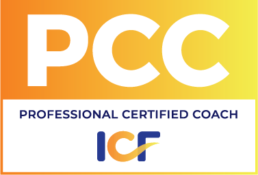
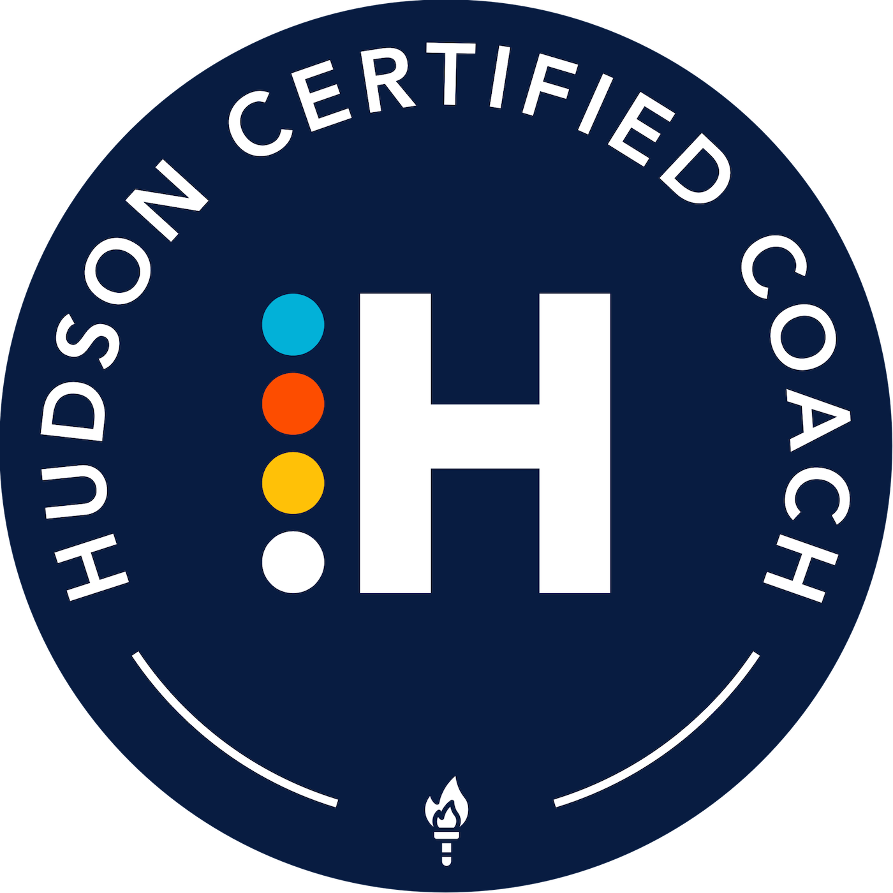
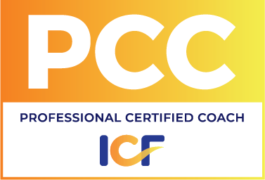
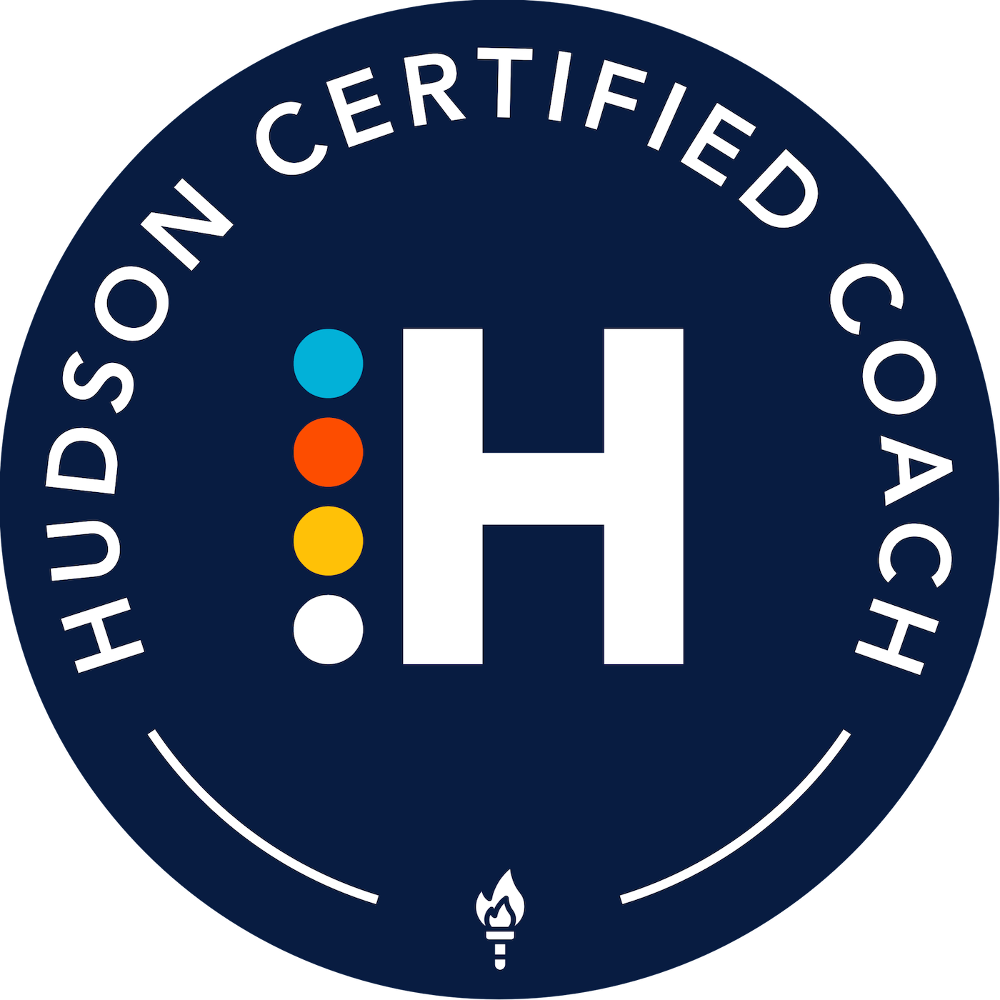

Credentials
I come to my work with a broad and deep set of professional skills and experiences. I've built learning and people functions at Google and Agoda.com, delivered strategy consulting and taught strategy at McKinsey & Company, served as chief people officer in a private equity firm, and taught at Princeton, Yale, USC, and other universities and business schools in the U.S. and Asia. This background helps me coach leaders both as a resource and as a peer, bringing practical operating experience, strategic thinking, empathy, and intellectual depth.
Business Experience


- Founder and director, Google University, Google
- VP of People and Organization Development, Agoda.com (Singapore/Bangkok, part of Booking Holdings)
- Chief People Officer and Managing Director, APL Group (private equity)
- Talent management, Standard Chartered Bank (Singapore)
- Consultant and core member of the strategy practice learning team, McKinsey & Company
Teaching Experience


Degrees & Certifications

 



- M.B.A., strategic management and health care management, Wharton
- Ph.D., humanities, University of Chicago
- ICF-certified Professional Certified Coach (PCC), graduate of the Hudson Institute of Coaching
- Hogan personality assessment certified